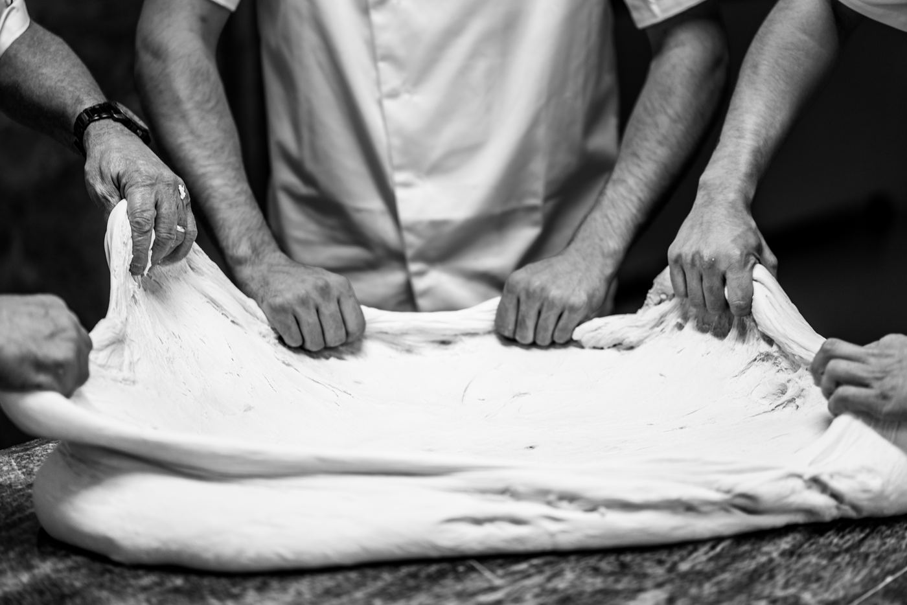
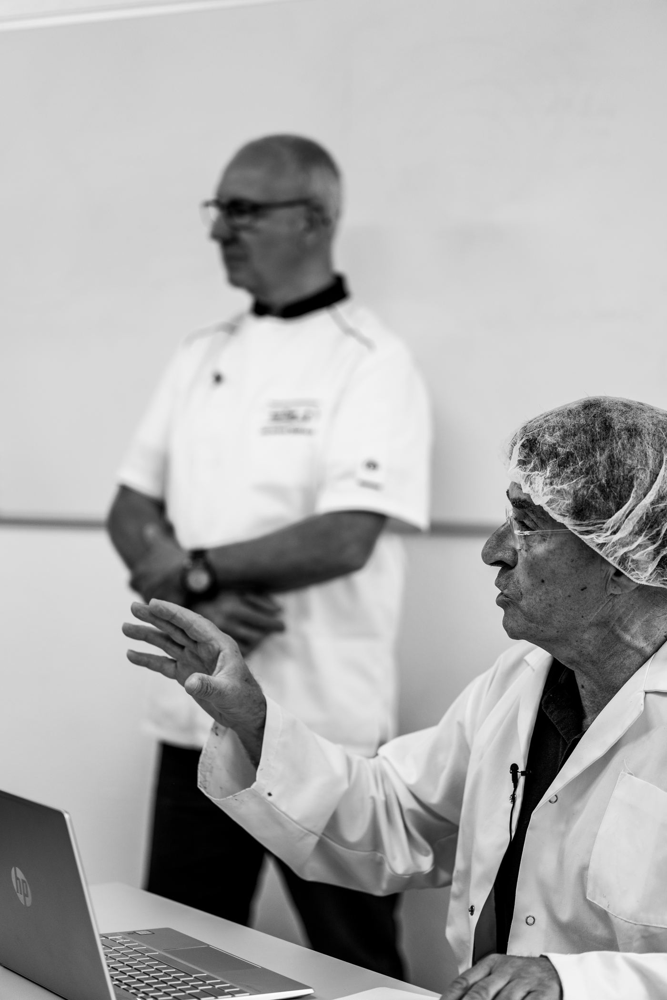
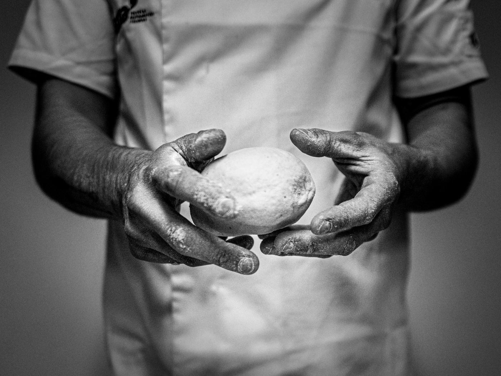
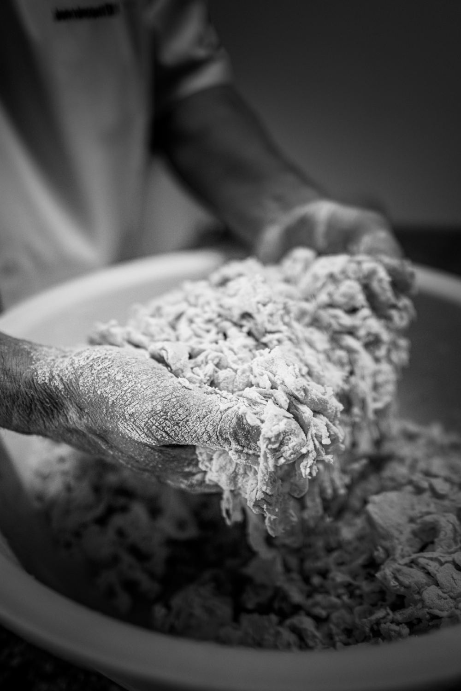
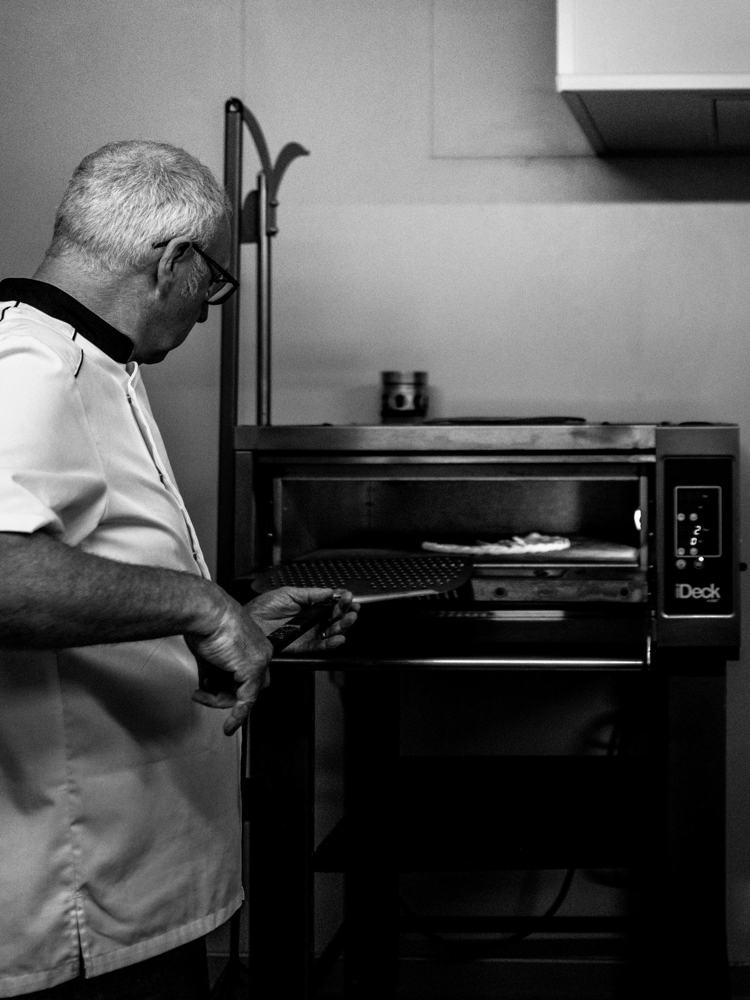
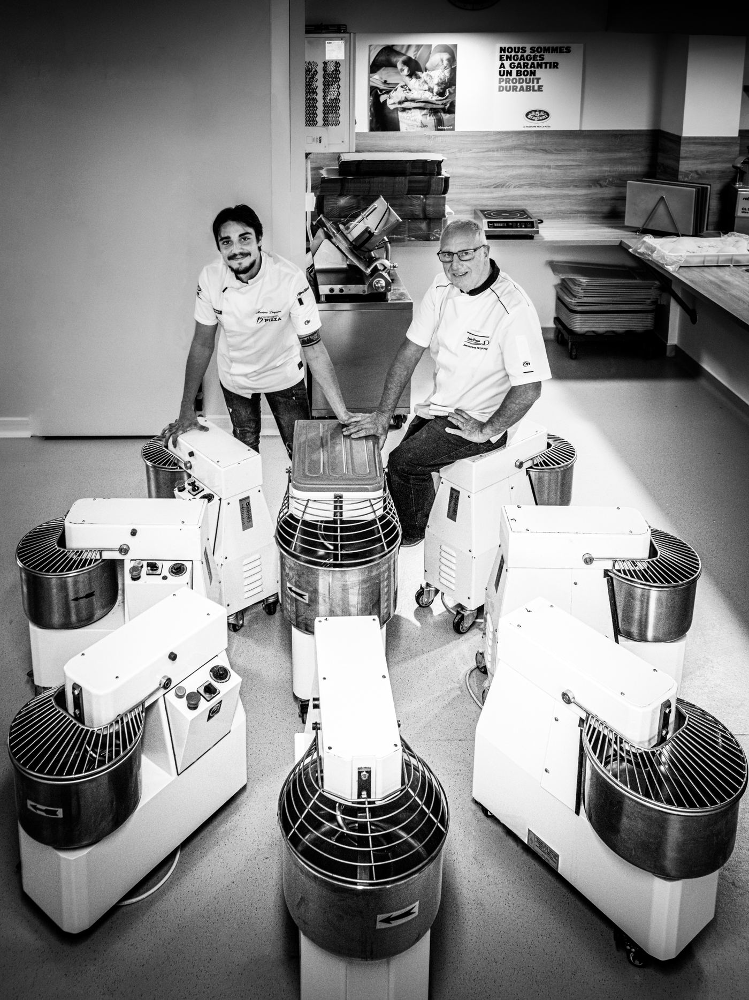

Formation Niveau I Pizza classique Réaliser des pizzas classiques, de l'élaboration de l'empâtement direct jusqu'à la sortie du four. 5 jours · 35 h55 pages Parcours certifiant · RS 7404
Fabriquer des pizzas artisanales
Fabriquer des pizzas artisanales, de l'élaboration de l'empâtement direct ou semi-direct jusqu'à la présentation du produit fini.
5 jours · 35 h55 pages
Parcours certifiant · RS 7404
Fabriquer des pizzas artisanales
Fabriquer des pizzas artisanales, de l'élaboration de l'empâtement direct ou semi-direct jusqu'à la présentation du produit fini.
5 jours · 35 h55 pages

Formation · Hygiène alimentaire en restauration commerciale Niveau I option hygiène Réaliser des pizzas classiques, de l'élaboration de l'empâtement direct jusqu'à la sortie du four, en appliquant les gestes et la réglementation d'hygiène adaptés à la restauration commerciale. 5 jours · 44 h64 pages
Formation · Professionnels des métiers de bouche Niveau I Pro Pizza classique Mettre en pratique le protocole de l'empâtement direct ainsi que l'étalage à la main. 2 jours · 15 h34 pages Formation · Prérequis : Niveau I ou Niveau I Pro
Niveau II Empâtements indirects
Réaliser des empâtements indirects — Poolish, Biga, Contemporaine.
3 jours · 21 h36 pages
Formation · Prérequis : Niveau I ou Niveau I Pro
Niveau II Empâtements indirects
Réaliser des empâtements indirects — Poolish, Biga, Contemporaine.
3 jours · 21 h36 pages

Formation · Prérequis : Niveau I ou Niveau I Pro Niveau Expert Spécialités italiennes Réaliser les empâtements indirects Poolish, Biga, Contemporaine, In Teglia et In Pala, ainsi qu'un empâtement direct In Teglia et In Pala. 4 jours48 pages
Spécialisation · Prérequis : Niveau I ou Niveau I Pro In Teglia & In Pala Réaliser une pizza In Teglia et In Pala, spécialités italiennes destinées à être vendues à la part. 2 jours · 14 h34 pages Spécialisation · Verace Pizza Napoletana · STG UE 97/2010
Pizza napolitaine
Réaliser des pizzas napolitaines, de l'élaboration de l'empâtement jusqu'à la sortie du four, conformément aux cahiers des charges STG et AVPN.
5 jours · 35 h29 pages
Spécialisation · Verace Pizza Napoletana · STG UE 97/2010
Pizza napolitaine
Réaliser des pizzas napolitaines, de l'élaboration de l'empâtement jusqu'à la sortie du four, conformément aux cahiers des charges STG et AVPN.
5 jours · 35 h29 pages

Document d'accueil Livret d'accueil Tout ce qu'il faut savoir avant d'arriver : où nous trouver, comment se déroule votre formation, ce qui est attendu de vous. À lire avant le premier jour21 pages